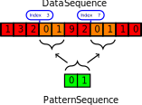

import numpy as npa = np.random.rand(100)b = np.random.rand(100)
Dot product
Exercises:
numpy dot product of a and b
write manual loop
compare results
Matrix product
Exercice:
Generate 2 random matrix 5 \times 5
Numpy matrix product of both
Manual loop, compare result
Manual loop with numpy dot product of row-column, conpare resurt
Use np.testing with the right assert function for comparison purpose.
Colum-wise sum
Code
D = np.arange(10).reshape(2,5)D
Exercise:
Col-wise sum of D with numpy
the same with loop(s), compare results
Ramping up, sequence searching
A frequent in image processing is to find a precise pattern in a given image. We will restrict ourselves to the one-dimensional case (a list of positive integers), and we will first try to implement this algorithm.
We want a function that takes as argument two unidimensional numpy arrays, the first contains the data, and the second the sequence we want to find in the data. The function returns the list of indices in the array of data, indices which correspond to the start of each subsequence of data identical to the sequence we are searching for.
Illustration

Sequence search
First blocks
Code
data = np.array([1,3,2,0,1,9,2,0,1,1,0],dtype=np.uint8)sequence = np.array([0,1],dtype=np.uint8)
We want to get
numpy_search_sequence(data,séquence)
array([3, 7], dtype=int64)
Exercise
First create an increasing list of indices avec np.arange with the same size of the search sequence
seq_size =seq_ind =
Call data_size the size of the input data.
We now want a list of increasing indices from 0 to data_size-seq_size, but transformed into a column vector thanks to reshape of numpy. Call data_ind this column vector (dimesion (data_size-seq_size+1,1)).
We will then use numpy’s broadcasting rules to create a vector of dimension (data_size-seq_size+1,2) which contains the list of all possible adjacent sequences of indices that we want to locate in the data as follows:
(10,1) and (2,) are compatible because the first array data_ind contains an unit dimension on the right, the broadcasting, it will first “stretch” on this dimension to match that of seq_ind, then broadcast the addition of seq_ind over the ten lines, the first element of ind_seq being added to the first element of a line, then the second element of seq_ind adding to the second element of the corresponding row. The operation is thus repeated on each line.
Indice expression
Using the result of the previous question as indices for the array of data, apply the search for sequences that are correctly matched with a simple operator. Explain why the result has the same dimension (shape) as data_ind and not as data.
It is the array data_ind + seq_ind which is used to index the array of data, the corresponding indices are simply used on data to provide the result. Next, numpy performs a broadcasting with the == operator which returns a boolean for each element broadcasted from both sides (as before, first element of each line of the first operand on first element of the sequence to match, etc.)
Final match
Now we are looking for all lines having a perfect match, ie only True. Use the np.all function for this
---title: Numpy Workoutsubtitle: A short remainder on `numpy` with exercises---# Starting slowlyShort application about `numpy`, just a refresh## Some loops```{python}import numpy as npa = np.random.rand(100)b = np.random.rand(100)```## Dot productExercises: 1. numpy dot product of a and b2. write manual loop3. compare results```{python}#| tags: [solution]np.dot(a,b)``````{python}#| tags: [solution]resdot=0for i inrange(100): resdot += a[i]*b[i]resdot```## Matrix productExercice:1. Generate 2 random matrix $5 \times 5$2. Numpy matrix product of both3. Manual loop, compare result4. Manual loop with numpy dot product of row-column, conpare resurtUse `np.testing` with the right assert function for comparison purpose.```{python}#| tags: [solution]A = np.random.rand(5,5)B = np.random.rand(5,5)``````{python}#| tags: [solution]C = A @ B``````{python}#| tags: [solution]Cres = np.zeros((5,5))for i inrange(5):for j inrange(5):for k inrange(5): Cres[i,j] += A[i,k] * B[k,j]np.testing.assert_array_almost_equal(Cres,C)``````{python}#| tags: [solution]Cres = np.zeros((5,5))for i inrange(5):for j inrange(5): Cres[i,j] = np.dot(A[i],B[:,j])np.testing.assert_array_almost_equal(Cres,C)```## Colum-wise sum```{python}D = np.arange(10).reshape(2,5)D```Exercise:1. Col-wise sum of D with numpy2. the same with loop(s), compare results```{python}#| tags: [solution]Drowsum = np.sum(D,axis=0)Drowsum``````{python}#| tags: [solution]Drowsumres = np.zeros(5)for j inrange(5):for i inrange(2): Drowsumres[j] += D[i,j]np.testing.assert_array_equal(Drowsum,Drowsumres)```# Ramping up, sequence searchingA frequent in image processing is to find a precise pattern in a given image. We will restrict ourselves to the one-dimensional case (a list of positive integers), and we will first try to implement this algorithm.We want a function that takes as argument two unidimensional numpy arrays, the first contains the data, and the second the sequence we want to find in the data. The function returns the list of indices in the array of data, indices which correspond to the start of each subsequence of data identical to the sequence we are searching for.## Illustration :::{.content-hidden when-format="revealjs"}{width=100%}::::::{.content-visible when-format="revealjs"}[]{.fragment .fade-in-then-out}```yaml { .animate style="width: 100%;" src="../tikz-figures/sequence-search.svg"}setup: - element: "[id^=pair], #firstocc, #secocc" modifier: "opacity" parameters: [ 0 ]animation: - [] - - element: "#pair1" modifier: "opacity" parameters: [ 1 ] - element: "#pair1" modifier: "opacity" parameters: [ 0 ] - element: "#pair2" modifier: "opacity" parameters: [ 1 ] - element: "#pair2" modifier: "opacity" parameters: [ 0 ] - element: "#pair3" modifier: "opacity" parameters: [ 1 ] - element: "#pair3" modifier: "opacity" parameters: [ 0 ] - element: "#pair4, #firstocc" modifier: "opacity" parameters: [ 1 ] - element: "#pair5" modifier: "opacity" parameters: [ 1 ] - element: "#pair5" modifier: "opacity" parameters: [ 0 ] - element: "#pair6" modifier: "opacity" parameters: [ 1 ] - element: "#pair6" modifier: "opacity" parameters: [ 0 ] - element: "#pair7" modifier: "opacity" parameters: [ 1 ] - element: "#pair7" modifier: "opacity" parameters: [ 0 ] - element: "#pair8, #secocc" modifier: "opacity" parameters: [ 1 ] - element: "#pair9" modifier: "opacity" parameters: [ 1 ] - element: "#pair9" modifier: "opacity" parameters: [ 0 ] - element: "#pair10" modifier: "opacity" parameters: [ 1 ] - element: "#pair10" modifier: "opacity" parameters: [ 0 ]```:::## First blocks```{python}data = np.array([1,3,2,0,1,9,2,0,1,1,0],dtype=np.uint8)sequence = np.array([0,1],dtype=np.uint8)```We want to get```pythonnumpy_search_sequence(data,séquence)``````pythonarray([3, 7], dtype=int64)```## ExerciseFirst create an increasing list of indices avec `np.arange` with the same size of the search sequence```pythonseq_size =seq_ind =``````{python}#| tags: [solution]seq_size = sequence.sizeseq_ind = np.arange(seq_size)seq_ind```## Exercise cont.Call `data_size` the size of the input data.We now want a list of increasing indices from 0 to `data_size-seq_size`, but transformed into a column vector thanks to `reshape` of numpy. Call `data_ind` this column vector (dimesion `(data_size-seq_size+1,1)`).```pythondata_size =cor_size = data_size-seq_size+1data_ind =``````{python}#| tags: [solution]data_size = data.sizecor_size = data_size-seq_size+1data_ind = np.arange(cor_size).reshape((cor_size,1))data_ind```## BroadcastingWe will then use numpy's *broadcasting* rules to create a vector of dimension `(data_size-seq_size+1,2)` which contains the list of all possible adjacent sequences of indices that we want to locate in the data as follows:```pythonarray([[ 0, 1], [ 1, 2], [ 2, 3], [ 3, 4], [ 4, 5], [ 5, 6], [ 6, 7], [ 7, 8], [ 8, 9], [ 9, 10]])```## Broadcasting cont.What very simple operation to perform on `data_ind` and `seq_ind` to get this?— [official numpy doc](https://numpy.org/doc/stable/user/basics.broadcasting.html)— [french explanation](https://nbhosting.inria.fr/builds/ue12-python-numerique/handouts/latest/2-05-numpy-broadcast.html)## Broadcasting cont. 2```{python}#| tags: [solution]data_ind + seq_ind```(10,1) and (2,) are compatible because the first array `data_ind` contains an unit dimension on the right, the *broadcasting*, it will first “stretch” on this dimension to match that of ` seq_ind`, then *broadcast* the addition of `seq_ind` over the ten lines, the first element of `ind_seq` being added to the first element of a line, then the second element of `seq_ind` adding to the second element of the corresponding row. The operation is thus repeated on each line.## Indice expressionUsing the result of the previous question as indices for the array of `data`, apply the search for sequences that are correctly *matched* with a simple operator. Explain why the result has the same dimension (*shape*) as `data_ind` and not as `data`.```pythonarray([[False, False], [False, False], [False, False], [ True, True], [False, False], [False, False], [False, False], [ True, True], [False, True], [False, False]])``````{python}#| tags: [solution]data[data_ind + seq_ind] == sequence```## Indice expression cont.It is the array `data_ind + seq_ind` which is used to *index* the array of `data`, the corresponding indices are simply used on `data` to provide the result. Next, numpy performs a *broadcasting* with the `==` operator which returns a boolean for each element *broadcasted* from both sides (as before, first element of each line of the first operand on first element of the sequence to match, etc.)## Final matchNow we are looking for all lines having a perfect match, ie only `True`. Use the `np.all` function for this```pythonarray([False, False, False, True, False, False, False, True, False,False])``````{python}#| tags: [solution]np.all(data[data_ind + seq_ind] == sequence,1)```## Indice extractionFinally we now extract the indices where there is "match" thanks to `np.nonzero````pythonarray([3, 7], dtype=int64)``````{python}#| tags: [solution]np.nonzero(np.all(data[data_ind + seq_ind] == sequence,1))[0]```